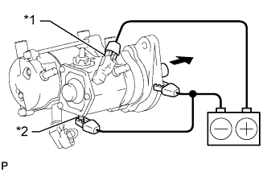
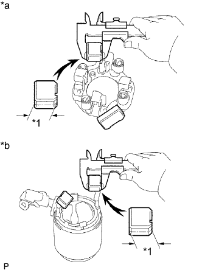
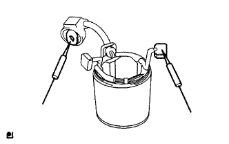

СТАРТЕР > ПРОВЕРКА |
| 1. ПРОВЕРЬТЕ СТАРТЕР В СБОРЕ |
Закрепите стартер в тисках между алюминиевыми пластинами.
Выполните испытание втягивания.
Отверните гайку, а затем отсоедините вывод от контакта C.
|  |
Подсоедините аккумуляторную батарею к втягивающему реле стартера, как показано на рисунке. Убедитесь, что ведущая шестерня муфты выдвигается.
| *1 | Контакт 50 |
| *2 | Контакт C |
Выполните испытание удержания.
Отсоедините отрицательный (-) вывод от контакта С при условиях, описанных в испытании втягивания выше. Убедитесь, что ведущая шестерня остается снаружи.
| *1 | Контакт C |
Проверьте возврат ведущей шестерни муфты.
Отсоедините отрицательный вывод (-) от корпуса стартера. Убедитесь, что ведущая шестерня муфты возвращается внутрь.
Если ведущая шестерня муфты не перемещается внутрь, проверьте втягивающее реле стартера в сборе. Если втягивающее реле стартера не соответствует требованиям, замените его.
Выполните испытание работы без нагрузки.
Подсоедините вывод к контакту C.
Подсоедините аккумуляторную батарею и амперметр к стартеру, как показано на рисунке.
| *1 | Контакт 50 |
| *2 | Контакт 30 |
Убедитесь, что стартер вращается плавно и непрерывно, когда ведущая шестерня выдвинута. Затем измерьте ток.
| 2. ПРОВЕРЬТЕ ВТЯГИВАЮЩЕЕ РЕЛЕ СТАРТЕРА В СБОРЕ |
 |
Проверьте втягивающую обмотку.
Измерьте сопротивление в соответствии со значениями, приведенными в таблице ниже.
| Контакты для подключения диагностического прибора | Состояние | Заданные условия |
| Контакт 50 - контакт C | Всегда | Менее 1 Ом |
| *1 | Контакт 50 |
| *2 | Контакт C |
Проверьте удерживающую обмотку.
Измерьте сопротивление в соответствии со значениями, приведенными в таблице ниже.
| Контакты для подключения диагностического прибора | Состояние | Заданные условия |
| Контакт 50 - корпус реле | Всегда | Менее 2 Ом |
| *1 | Контакт 50 |
| *2 | Корпус выключателя |
| 3. ПРОВЕРЬТЕ ЩЕТКУ |
|  |
Измерьте длину щетки штангенциркулем.
| *1 | Длина |
| *a | Сторона щеткодержателя |
| *b | Со стороны статора стартера |
| 4. ПРОВЕРЬТЕ ЩЕТКОДЕРЖАТЕЛЬ СТАРТЕРА В СБОРЕ |
Проверьте усилие щеточной пружины.
При помощи пружинного динамометра определите усилие в момент отрыва пружины от щетки.
| *1 | Щетка |
| *2 | Щеточная пружина |
Проверьте изоляцию.
Измерьте сопротивление в соответствии со значениями, приведенными в таблице ниже.
| Контакты для подключения диагностического прибора | Условие | Заданные условия |
| Положительный (+) щеткодержатель - отрицательный (-) щеткодержатель | Всегда | 10 Ом или более |
| 5. ПРОВЕРЬТЕ СТАТОР СТАРТЕРА В СБОРЕ |
Проверьте, нет ли обрыва в катушке возбуждения.
|  |
Измерьте сопротивление в соответствии со значениями, приведенными в таблице ниже.
| Контакты для подключения диагностического прибора | Условие | Заданные условия |
| Вывод - щетка | Всегда | Менее 1 Ом |
Измерьте сопротивление в соответствии со значениями, приведенными в таблице ниже.
| Контакты для подключения диагностического прибора | Условие | Заданные условия |
| Корпус статора стартера - щетка | Всегда | 10 кОм или более |
| 6. ПРОВЕРЬТЕ ЯКОРЬ СТАРТЕРА В СБОРЕ |
Проверьте, нет ли на поверхности коллектора загрязнений и/или следов подгорания.
При наличии на поверхности коллектора загрязнений или следов подгорания удалите их наждачной бумагой (№ 400) или на токарном станке.
Проверьте коллектор на обрыв цепи.
Измерьте сопротивление в соответствии со значениями, приведенными в таблице ниже.
| Контакты для подключения диагностического прибора | Состояние | Заданные условия |
| Сегмент - сегмент | Всегда | Менее 1 Ом |
| *1 | Сегмент |
Проверьте коллектор на короткое замыкание.
Измерьте сопротивление в соответствии со значениями, приведенными в таблице ниже.
| Контакты для подключения диагностического прибора | Состояние | Заданные условия |
| Сегмент - сердечник | Всегда | 10 кОм или более |
| *1 | Сегмент |
| *2 | Сердечник |
Проверьте радиальное биение коллектора.
Установите коллектор на V-образные призмы.
Измерьте радиальное биение индикатором часового типа.
Измерьте диаметр коллектора штангенциркулем.
 |
С помощью штангенциркуля измерьте глубину канавок коллектора.
| 7. ПРОВЕРЬТЕ ПУСКОВУЮ МУФТУ |
 |
Поверните ведущую шестерню по часовой стрелке и проверьте, плавно ли она вращается. Попытайтесь повернуть ведущую шестерню против часовой стрелки и убедитесь, что она блокируется.
 | Разблокировано |
 | Блокировка |
Вручную проверните ведущую шестерню, нажимая на нее, и проверьте перемещение подшипника.
Если ощущается сопротивление, или подшипник заедает, замените пусковую муфту в сборе.